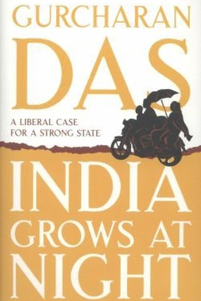

Library › Business & Startups
India Grows at Night — Summary & Key Lessons

Why India's economy grows despite the state — the case for the rule of law.
📖 OPEN THE FULL INTERACTIVE BREAKDOWN →🌐 Read it in Hindi, Hinglish, Gujarati, Tamil & 22 more languages — free, with audio.
💡 The Big Idea
Gurcharan Das's provocative thesis: India's economy grows at night — despite the government, not because of it. Drawing on India's liberalization history and the lives of its entrepreneurs, he argues that the Indian state has historically been a brake on enterprise: licenses, red tape and bureaucracy throttle the 'daytime' formal economy, while the real dynamism happens in the 'night' — in the informal economy, in the tenacity of small traders, and in the entrepreneurs who succeed by escaping the state's grip. The book is a celebration of Indian enterprise and a critique of the institutions that constrain it, ending with a call for a 'rule of law' state that lets the daytime catch up with the night.
🧠 The 6 Key Lessons
Lesson 1: The Informal Economy: India's Real Engine
Part 1: The Diagnosis
Das's central observation: a huge portion of India's economy operates outside official records — the 'night' economy of small workshops, street vendors, truckers and traders that the state neither sees nor regulates. This economy is staggeringly productive and resilient precisely because it is unregulated: no licenses to wait for, no inspectors to bribe, no red tape. The lesson for every aspiring builder: where institutions are broken, the informal path is not cheating — it is survival, and often the only route to growth. The state's obsession with controlling the formal economy while ignoring the informal one creates a strange world where the 'official' economy limps while the 'unofficial' one thrives.
📖 Example: Das points to how India's trucking industry — fragmented, informal, and self-organized — moves more goods than most 'modern' logistics systems, not because of government planning but because thousands of small operators found ways to make it work without it. Read the full example →
⚡ Do this: If you're building a business in a bureaucracy-heavy environment, ask: 'What can I do legally without waiting for permission?' The path that needs no license is often the fastest start.
Lesson 2: The License Raj's Lesson: Red Tape Is a Tax on the Poor
Part 2: The History
Das documents the 'License Raj' — the decades when starting any business in India required government permits for everything from production capacity to expansion. The results were catastrophic: corruption became the lubricant of the economy, the poor were priced out of enterprise, and India's entrepreneurs survived by learning to work the system rather than by building better products. The lesson is universal: every unnecessary regulation is a tax, and it taxes the weakest most — because the rich can buy their way through red tape while the poor cannot. The great liberalization of 1991 was a moral act as much as an economic one: it freed millions to build without first asking permission.
📖 Example: Das recounts how entrepreneurs in the License Raj hired 'permit expeditors' — people whose only skill was navigating the licensing maze — and how the same talent, redirected after 1991, built India's modern software and services industries. Remove the maze,… Read the full example →
⚡ Do this: Audit your own work or business for 'internal license raj': approvals, processes and sign-offs that exist without adding value. Cut one this month — you'll be surprised what the freed energy produces.
Lesson 3: The Entrepreneur's Tenacity: Indians Build in Spite of Everything
Part 3: The People
The heart of the book is its portraits: Indians who built enterprises against every obstacle — the milkman who built a dairy empire, the weaver who outcompeted factories, the trader who became an industrialist. Das's point: Indian entrepreneurs are world-class in tenacity precisely because the environment forced them to be. Where the state fails, the entrepreneur compensates with relationships, networks, and an almost mystical patience. The lesson is double-edged: the same environment that creates such resilience also wastes it — imagine what these builders could do with functioning institutions. For the individual, the takeaway is clear: don't wait for the environment to be fair; build with what exists and treat obstacles as the price of entry.
📖 Example: Das tells of entrepreneurs who kept factories running through power cuts with generators, built roads to their own plants when the state wouldn't, and trained workers the schools never produced — each improvisation a small national infrastructure built by… Read the full example →
⚡ Do this: List the top 3 'environmental' obstacles in your path right now. For each, write one workaround you can execute without waiting for the system to change — then start the first one.
Lesson 4: The Rule of Law: The Missing Foundation
Part 4: The Reform
Das's prescription for making India's daytime match its night: the rule of law — predictable, enforceable, honest institutions. His comparison of India with China (and with its own potential) shows that the binding constraint is not capital, talent or ideas — it is the contract: when businesses can't trust courts, permits or contracts, they stay small, stay informal, and stay in the night. The rule of law is the infrastructure that turns tenacity into compounding. For individuals and firms, the lesson is strategic: choose to operate where contracts are enforceable, and build your own internal 'rule of law' — written agreements, clear terms, honest accounting — even if your environment doesn't demand it.
📖 Example: Das contrasts how the same Indian entrepreneur behaves differently in Singapore (where contracts are sacred) versus India (where they're negotiation starting points) — the environment, not the person, determines how much enterprise can safely build. The rule… Read the full example →
⚡ Do this: Write down your three most important business relationships. For each, ask: 'Is this built on enforceable clarity or on goodwill alone?' Convert one of them into a written, specific agreement this quarter.
Lesson 5: The State as Facilitator: What Good Government Actually Does
Part 4: The Reform
Das is not anti-state; he is anti-bad-state. The book's positive vision: a government that facilitates rather than controls — that builds roads, schools and courts, enforces contracts, and then gets out of the way. His historical examples (from the Mauryan era to modern Kerala) show that the states that flourished were the ones that protected property and enterprise, and the ones that failed were the ones that treated the economy as their own farm. The lesson for leaders of any organization: your job is to set the rules, build the infrastructure, and then trust the players. A leader who must approve every move is a License Raj in miniature; a leader who builds the field and referees it enables the night to become day.
📖 Example: Das highlights how the IT revolution succeeded precisely because the state stayed mostly absent — no licenses, no controls, just infrastructure and opportunity — while the manufacturing sector, historically micro-managed, struggled. The state's best policy… Read the full example →
⚡ Do this: If you lead anything, run the 'facilitator test': what rules, approvals or controls of yours are pure friction? Remove one this week and replace it with a clear standard plus trust.
Lesson 6: The Middle-Class Optimism: The Promise of India's Builders
Part 5: The Hope
Das ends with a contrarian optimism: India's middle class — the small business owners, professionals, traders and builders — is the country's real engine of reform, because they want the rule of law more than anyone. They pay taxes, they want their children educated, they want contracts enforced — and their rising political voice is what will eventually force the daytime institutions to match the night's dynamism. The lesson: change rarely comes from the top; it comes from the accumulated pressure of people who just want to build without being harassed. The builders of India are not waiting for permission to be optimistic — they are building anyway, and their patience is the country's greatest resource.
📖 Example: Das observes how every Indian success story — from the street vendor who educates a doctor-daughter to the startup founder who hires a hundred graduates — quietly builds the social capital that democracy eventually converts into better institutions. The… Read the full example →
⚡ Do this: Commit one act this month that builds your corner of the 'daytime': pay a tax honestly, write a proper contract, mentor a young builder, or register something properly. Institutions are built one honest transaction at a time.
✅ 5-Step Action Plan
- Identify one opportunity you can legally pursue without waiting for permission — start it this month.
- Cut one unnecessary approval or process in your own work (internal license raj).
- Convert one goodwill-only relationship into a written, specific agreement.
- Run the 'facilitator test' on your own leadership and remove one friction rule.
- Do one honest institution-building act this month (tax, contract, mentoring).
⚠️ When This Doesn't Work
Das's 'India grows despite the state, not because of it' is the most contrarian Indian economics book ever — and IL&FS is the warning that private infrastructure can fail as spectacularly as public: India's most respected infrastructure financier, the 'gold standard' of the private sector, collapsed with ₹91,000 crore of debt because the private sector replicated the state's disease — optimism without accountability. Das's thesis — the state is the problem, the market is the solution — is half right. The caveat: markets need the same supervision they accuse the state of lacking. India grows at night; it also crashes at night when nobody is watching.
💀 The Graveyard Proves It
🏗️ IL&FS — The Lender That Froze India's Credit System. Burn: ₹91,000 crore in defaults; a nationwide credit freeze. Read the full case study →
💬 Best Quotes from India Grows at Night
- “India grows at night because that is when the state sleeps.”
- “Red tape is a tax, and it falls hardest on those who can least afford it.”
- “The rule of law is the infrastructure that turns tenacity into compounding.”
Interactive version: mark lessons as read, listen in your language, share quote cards.